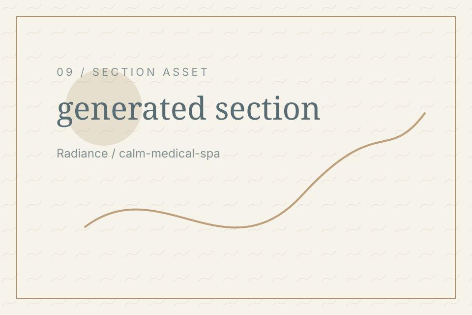
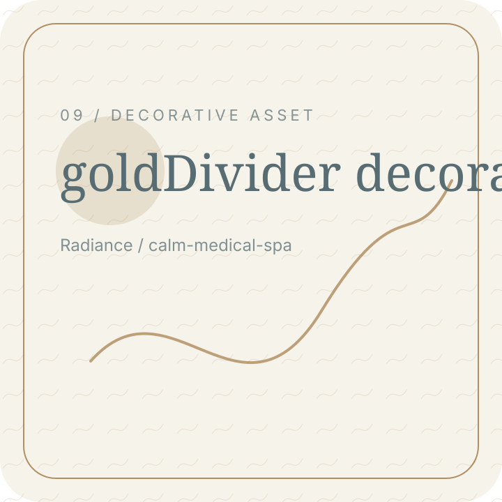

Radiance / Thank You Hero
Message received
Thank you. Your message has been sent.

concept-specific hero asset for Thank You Hero
Radiance / What Happens Next
Next step
Your message can now be reviewed and answered through the chosen route.

gold divider for What Happens Next
Radiance / While You Wait
While you wait
Read useful guidance before the next step.
 journal image for While You Wait
journal image for While You Wait
Radiance / Prepare Consultation
Prepare questions
Think about goals, routine, comfort, and expectations.
journal image for Prepare Consultation
Radiance / Privacy Reassurance
Privacy note
Review how contact information is handled.
gold divider for Privacy Reassurance
Radiance / Contact Again
Need to add
Send another message if needed.
CTA image panel for Contact Again
Radiance / Brand Reassurance
Calm guidance
Every next step should feel clear and considered.
gold divider for Brand Reassurance
Radiance / Final Route
Return home
Go back to the site or continue reading.
gold divider for Final Route